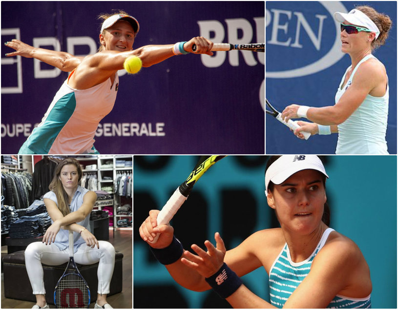

Becali şi Miriuţă, un nou dialog savuros în direct! "Vreau Dinamo în play-off. Gata!" Motivul pentru care s-a răzgândit. Patronul FCSB a încercat să-i facă echipa lui Dinamo pentru derby: "Hai, te rog, bagă-l pe el!"
LIGA I
13 februarie 2018
Halep va juca într-o faimoasă combinaţie de echipament după ce a semnat cu Nike! Simona, la fel ca Serena Williams şi Roger Federer, dar diferită de Maria Şarapova şi Rafael Nadal
SPECIAL
13 februarie 2018
JO 2018 | Lindsey Vonn: "Când am venit la PyeongChang acum doi ani, nu erau telescaune, gondole sau clădiri. Tăiau copacii şi construiau pistele, aşa că au progresat mult. Zăpada e puţin zaharoasă"
JO 2018
13 februarie 2018
Sorana Cîrstea este în turul doi la Doha: a învins-o rapid pe Sakkari, deşi a jucat cu mâna bandajată şi s-a certat cu arbitra într-un moment important. Irina Begu s-a resimţit după efortul din FED Cup şi a fost eliminată de Sam Stosur

TENIS
13 februarie 2018
Ionuţ Lupescu a anunţat când va începe campania pentru alegerile FRF şi echipa care-i va sta alături. Pe câte voturi se bazează "Kaiserul"
FOTBAL INTERN
13 februarie 2018
Goran: ”Astă-seară se face o chermeză, mai trebuia o găleată, o sticlă de ulei, două pungi cu făină, să fie împărţite delegaţiilor”. Campionul mondial a atras atenţia asupra ”organului de conducere, Consiliul de Administraţie”
HANDBAL
13 februarie 2018